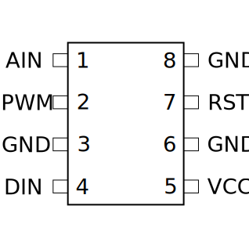
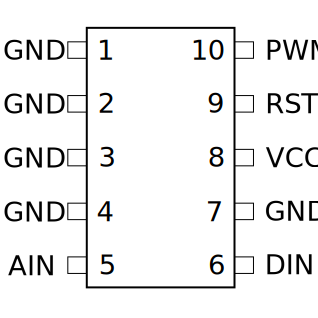
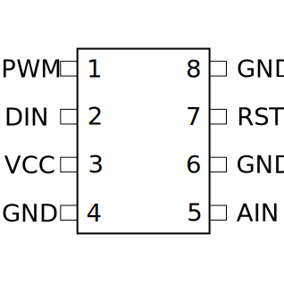
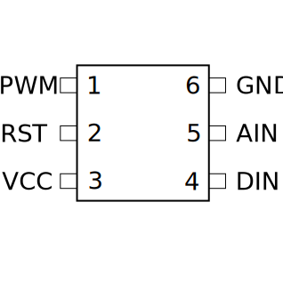
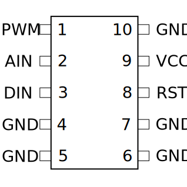
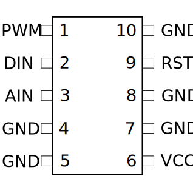
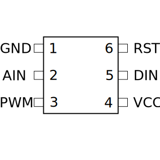
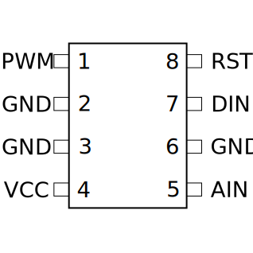

关于微型控制器(Microcontroller)
虽然被称做“微型”控制器，这东西其实挺大的。大概是因为它能引起挺大的爆炸吧……
- 以控制器所印刷的型号与其规格，用下方的图表来确定其引脚布局。
- 控制器上的白色标记表明了1号引脚所在的位置。其他引脚在1号同侧按升序排列，而后在另一侧反向继续排序。
- 使用下方的表格来确定每个连接的元件的正确色彩代码。
- 对于每个引脚，使用上下按钮来选择正确的元件，然后使用OK按钮确认你的输入（下一个引脚会被自动选择）。
引脚布局
失误(STRK)控制器：


二极管(LEDS)控制器：



倒计时(CNTD)控制器：


